Review first.Then launch.
A native Windows Git client built in Rust. An open-source alternative to Fork and GitKraken: review changes, manage branches, work with remotes and add your own features.
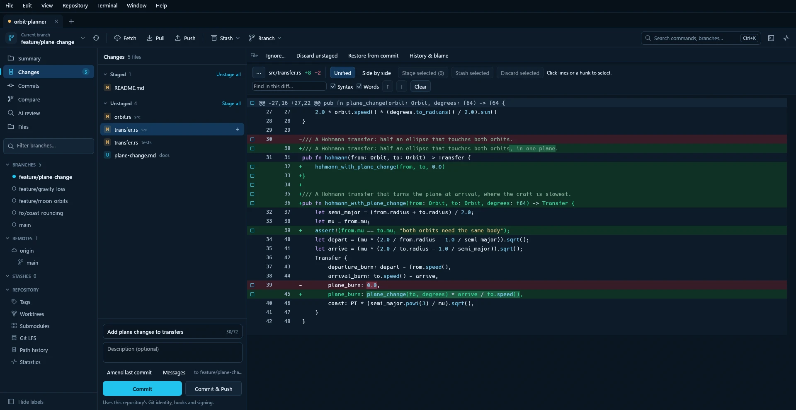
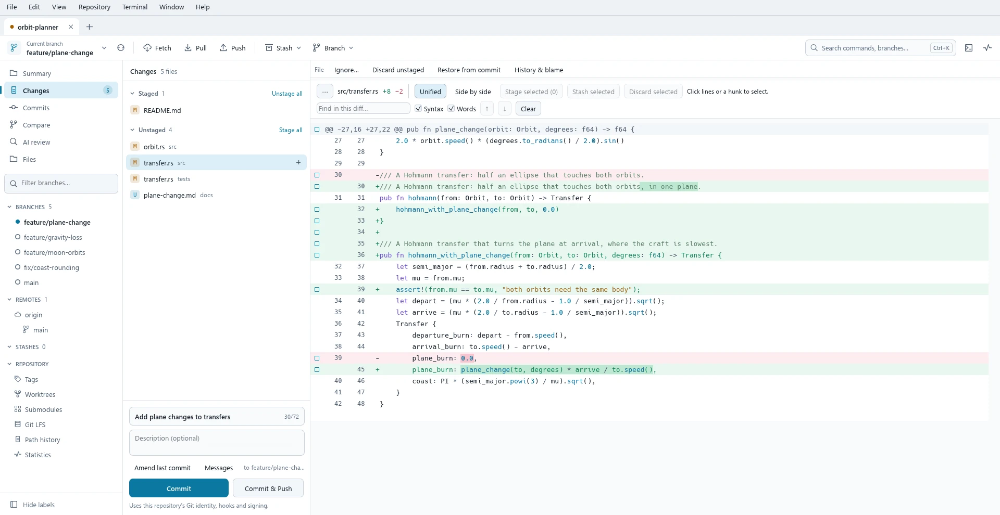
See it in 30 seconds.
See what will happen before it happens.
Operations that change a repository open a review first. It shows what will happen, and nothing is written until you confirm.
Reviews recheck
Supported previews pin the selected commits, paths and settings. A change from outside Rocket can invalidate one before it runs.
Recovery data
Supported destructive file operations keep recovery copies. History rewrites keep the original tips in recovery references.
Honest cancellation
Stop doesn't undo finished work. Rocket refreshes or checks the result, and says when it's unsure.
Secret checks
Local checks can block recognized credentials in commits and pushes. Pattern detection has limits.
Add your own features.
Extensions are sandboxed Lua packages with their own native panels, forms and tables, plus commands in the palette, the Repository menu and right-click menus.
Write your own extension- Install a package from a file after a review of its code and permissions
- An extension can't run Git or shell commands, read your files or see your tokens
- Build with the extension API, an offline Lua playground and developer tools that validate Lua
- Jira and PlayGround ship with Rocket and start off
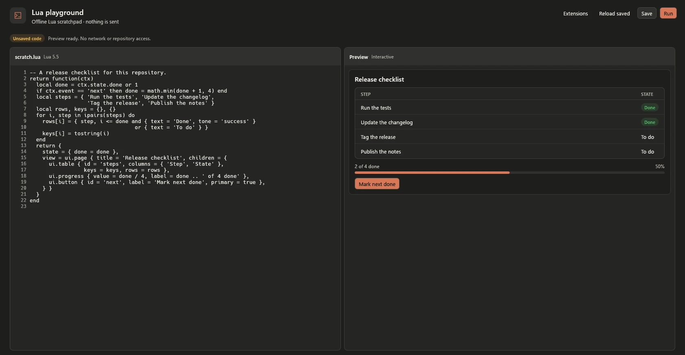
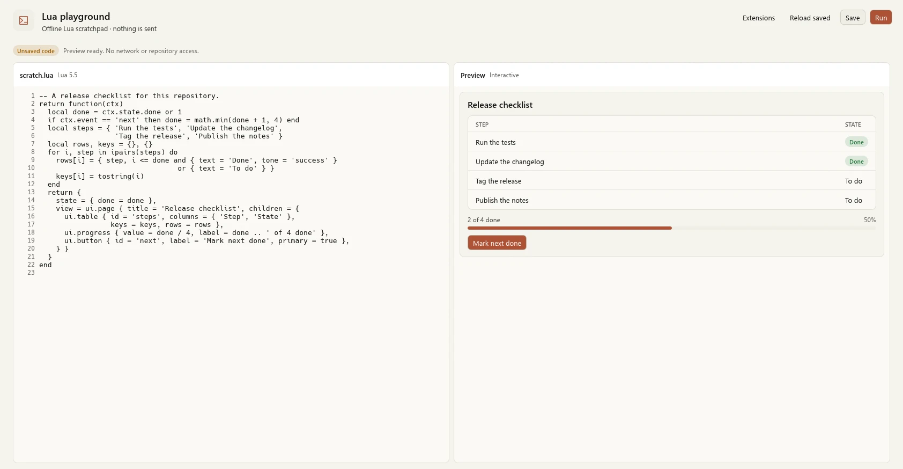
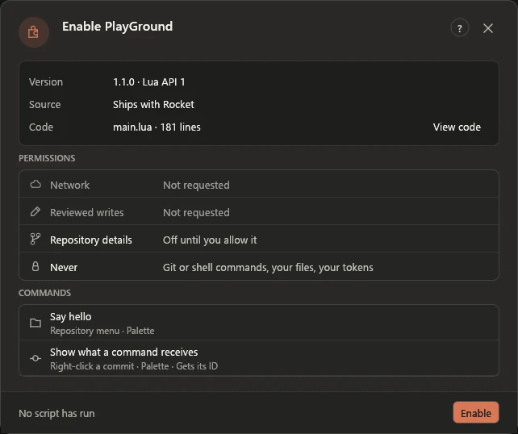
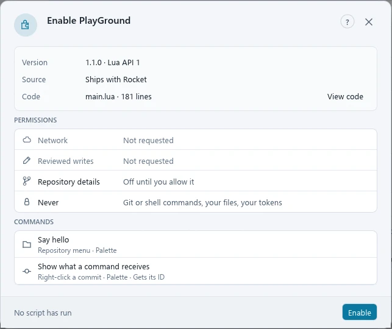
Stage exactly what you mean to commit.
Stage whole files, or pick hunks and lines in supported text changes. Read unified or side-by-side diffs with syntax highlighting, word highlights, search and an overview strip for long files.
- Drag selections between Staged and Unstaged
- Compare images with overlays, a swipe view and pixel differences
- Open commit details, file history and blame in their own windows
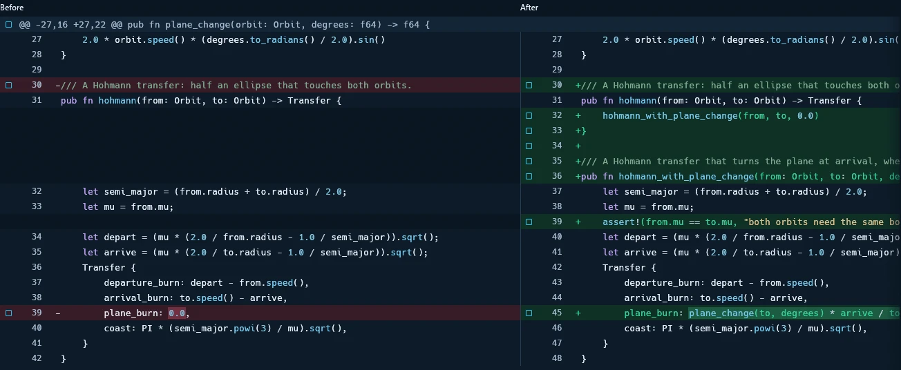
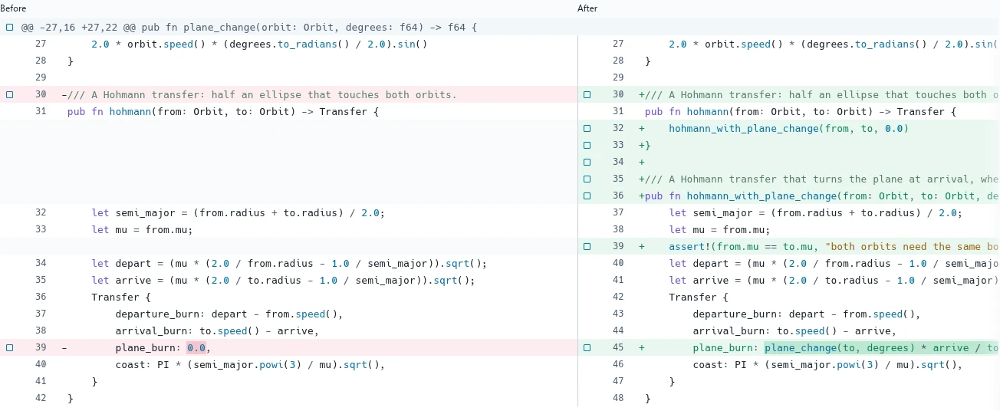
Read the graph. Plan the rewrite.
Browse the commit graph across branches, search beyond the loaded commits and follow file renames. Plan interactive rebases with reorder, reword, edit, squash, fixup and drop.
- Merge or rebase with a preview
- Cherry-pick a series or revert selected commits
- Continue, Skip or Abort recovery on supported operations
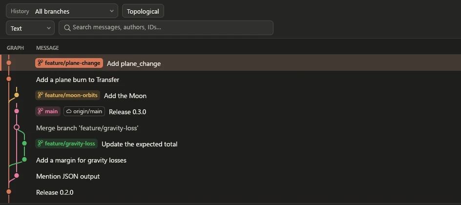
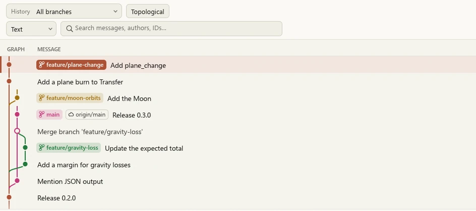
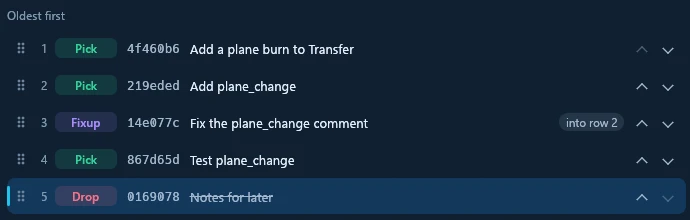
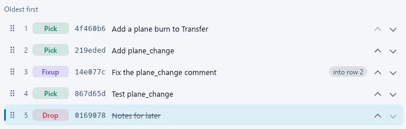
Resolve conflicts and keep a way back.
Resolve supported text conflicts in a three-column editor with linked scrolling and conflict navigation. Saving and staging keep recovery backups and check for edits made outside Rocket.
Ask Claude Code, Codex or a connected MCP agent for a proposal, read the explanation and the result, then apply it to the editor draft. Each applied conflict keeps its own Undo.
AI tools are optional and run only when you ask, under that program's own account. Rocket stores no AI API key. Repository content you send can leave your computer, so each tool shows or explains it first. The proposal pictured here is a scripted example.
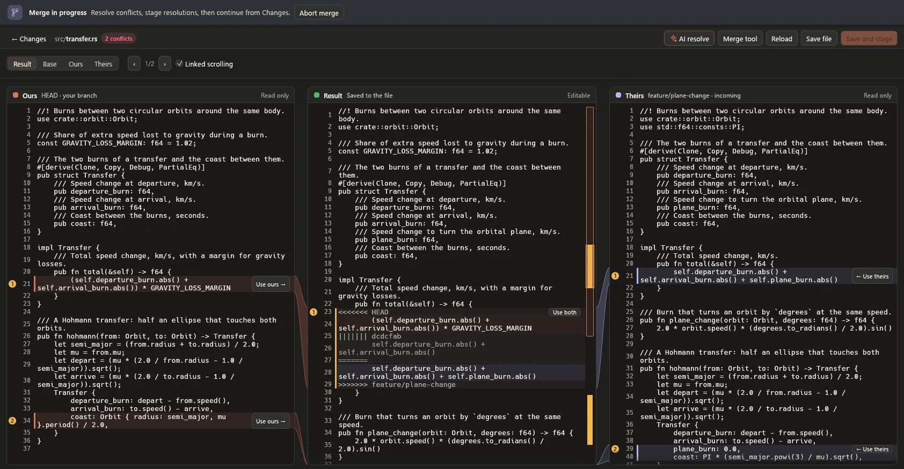
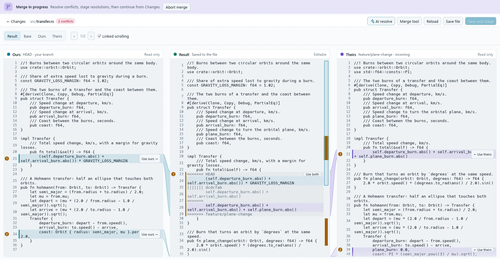
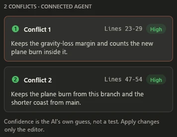
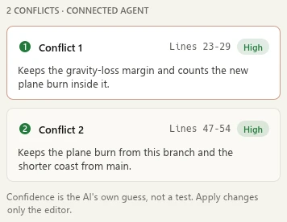
Fetch, pull and push with the details in view.
Choose fast-forward only, merge or rebase when pulling. Review normal and force-with-lease pushes, and publish several branches atomically when the server supports all-or-nothing updates.
See every SSH key in one list, unlock one in ssh-agent, or make one repository use only one key. Existing keys and SSH config stay in place.
- GitHub
- GitHub Enterprise Server
- GitLab
- Gitea
- Bitbucket Cloud
- Bitbucket Server/Data Center
- Azure DevOps Services
- Azure DevOps Server
Browse pull requests and supported issue lists, prepare reviewed PR or MR creation, and inspect details, available checks and reviews.
What each host can do differs. Live acceptance for hosts other than github.com is still unverified. Hosting details
Make the window yours.
Clay, the default, is warm charcoal with a coral accent, or ivory with terracotta. It follows Windows, or stays dark or light. Ocean is Rocket's original navy. Dark, Light and System are there too, or Custom with your own accent colour and a picture behind the window.
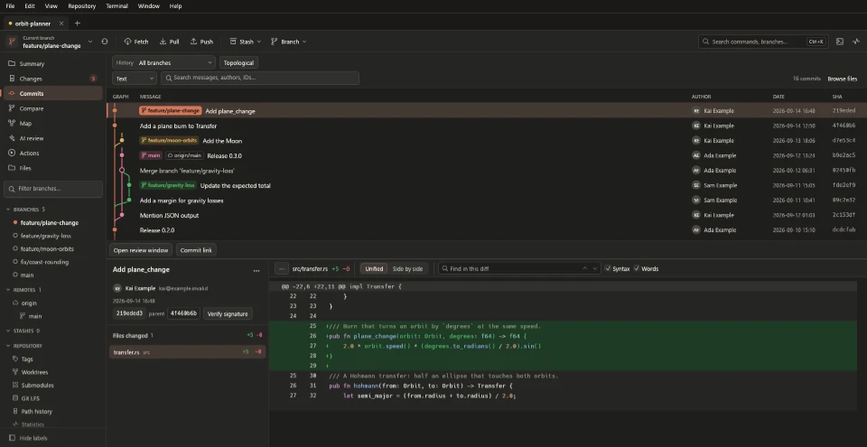
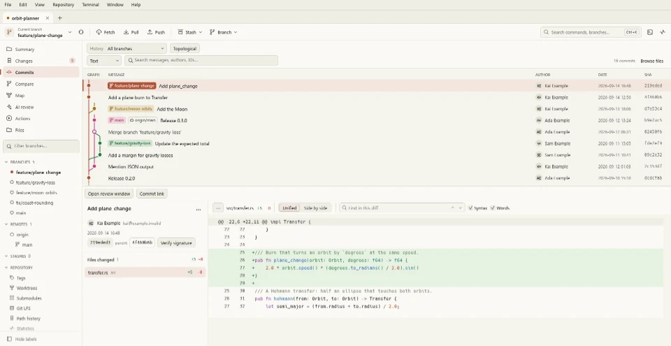
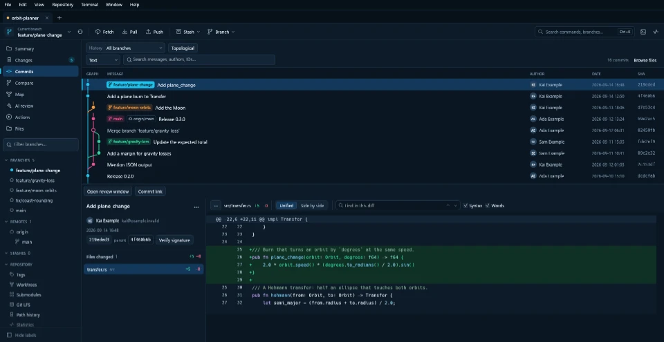
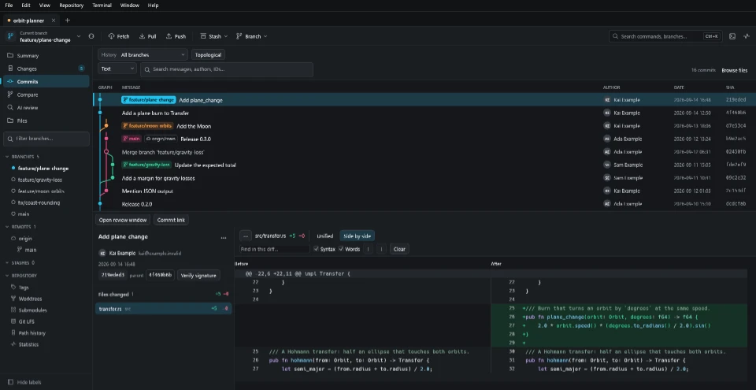
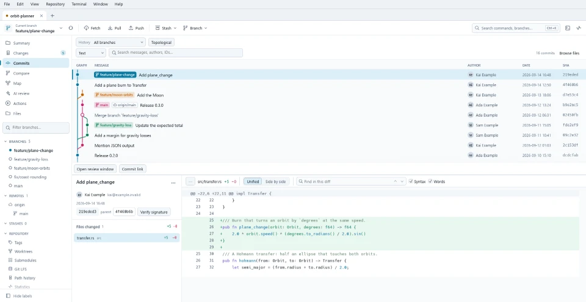
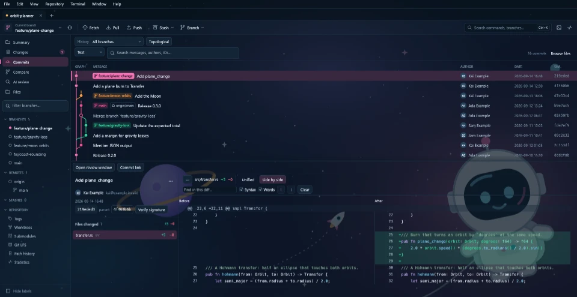
And the rest of your Git day.
Stashes
Save and inspect them, or apply selected files, hunks or lines.
Worktrees
Manage linked worktrees alongside your main checkout.
Submodules
Reviewed add, move, remove, sync and update, nested ones included.
Git LFS
Inspect files and objects, manage tracking rules and locks.
Tags
Inspect, publish and safely delete remote tags.
Recovery
Inspect reflogs, find lost commits and recover them onto new branches.
Bisect
Find the commit that introduced a problem, by hand or automated.
Terminal
Windows PowerShell, Git Bash, Command Prompt, PowerShell 7 or your own shell.
Command palette
Ctrl+K finds commands, branches and views.
Repository manager
Saved repositories in folders, nested workspaces and tabs.
Command line
rocket-cli.exe calls the same backend, with structured JSON output.
Your tools
External editor, diff and merge profiles, custom commands and your own shortcuts.
Get Rocket.
Rocket is in development and has no public installer yet. Build it from source on Windows x64.
# needs Rust (MSVC), C++ build tools and Git 2.46+
git clone https://github.com/JasXTD/rocket.git
cd rocket
.\tools\Build-Local.ps1
.\target\release\rocket.exe